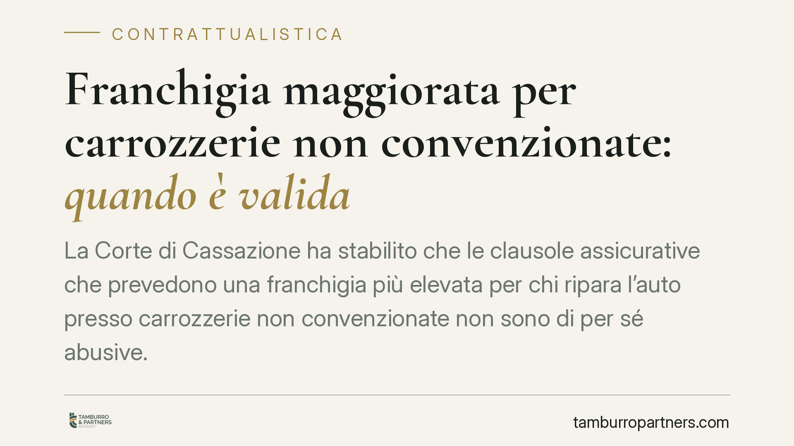

Franchigia maggiorata per carrozzerie non convenzionate: quando è valida
La Corte di Cassazione ha stabilito che le clausole assicurative che prevedono una franchigia più elevata per chi ripara l'auto presso carrozzerie non convenzionate non sono di per sé abusive. La validità va verificata caso per caso, valutando l'equilibrio contrattuale e le concrete modalità di negoziazione. Una precisazione che incide sui rapporti tra assicurati e compagnie.

Il quadro
Le polizze auto contengono sempre più spesso una previsione ricorrente: se l'assicurato porta il veicolo in una carrozzeria convenzionata con la compagnia, la franchigia — cioè la quota di danno che resta a suo carico — è ridotta o azzerata; se sceglie un'officina non convenzionata, la franchigia aumenta.
La domanda è naturale: una clausola di questo tipo limita la libertà di scelta del consumatore e crea uno squilibrio ingiustificato? La Corte di Cassazione ha fornito una risposta articolata: no, non automaticamente. Ma sì, in presenza di determinate condizioni.
Inquadramento normativo
Il riferimento è l'articolo 33 del d.lgs. n. 206 del 2005 (Codice del Consumo). La norma considera vessatorie — e dunque nulle — le clausole che, in contrasto con la buona fede, determinano "un significativo squilibrio dei diritti e degli obblighi derivanti dal contratto" a carico del consumatore.
Il punto centrale è che la vessatorietà non discende dal contenuto in sé della clausola, ma dallo squilibrio concreto che essa produce. Occorre inoltre distinguere tra clausole predisposte unilateralmente dalla compagnia e clausole oggetto di trattativa individuale: l'articolo 34, comma 4, del Codice del Consumo esclude la vessatorietà quando la clausola sia stata negoziata specificamente tra le parti.
La Cassazione ha ricondotto la franchigia maggiorata a questo binario di valutazione. Una franchigia differenziata non è, di per sé, una limitazione illegittima: può rappresentare la contropartita di un premio più basso o di condizioni complessivamente più favorevoli. Diventa problematica solo quando l'incremento è tale da comprimere di fatto la libertà di scelta della carrozzeria, senza alcun corrispettivo per l'assicurato.
Cosa cambia per l'assicurato
La pronuncia sposta l'attenzione dalla forma alla sostanza. Non basta invocare l'esistenza di una franchigia più alta per ottenere la disapplicazione della clausola: bisogna dimostrare che quella maggiorazione crea uno squilibrio significativo e ingiustificato.
Contano quindi elementi concreti: l'entità della differenza tra le due franchigie, la trasparenza con cui la clausola è stata presentata al momento della sottoscrizione, l'esistenza o meno di un vantaggio compensativo (premio ridotto, servizi aggiuntivi), la possibilità reale per l'assicurato di comprendere la portata economica della scelta.
Per le compagnie, la decisione conferma che clausole ben costruite e trasparenti sono difendibili. Per i consumatori, apre uno spazio di contestazione, ma condizionato alla prova dello squilibrio.
Un esempio
Se una polizza prevede franchigia zero presso convenzionate e 300 euro altrove, con un premio calibrato su questa struttura, la clausola avrà buone probabilità di reggere. Se invece la maggiorazione è sproporzionata — al punto da rendere economicamente proibitiva la scelta libera dell'officina — e non è bilanciata da alcun vantaggio, l'assicurato può sostenere l'abusività ai sensi dell'art. 33.
Cosa fare in concreto
- Leggi le condizioni prima di firmare. Individua la voce "franchigia" e verifica se il contratto distingue tra carrozzerie convenzionate e non convenzionate, quantificando la differenza.
- Confronta il premio. Chiedi alla compagnia se la franchigia differenziata è compensata da un premio inferiore. L'assenza di contropartita è un indizio di squilibrio.
- Conserva la documentazione. Nota informativa, condizioni generali, eventuali comunicazioni precontrattuali servono a ricostruire come la clausola è stata presentata.
- Valuta la sproporzione. Se la maggiorazione appare sproporzionata rispetto al costo medio di una riparazione, raccogli preventivi e dati che ne dimostrino l'effetto limitativo.
- Fatti assistere prima di agire. La contestazione richiede la prova dello squilibrio concreto: consigliamo un esame preventivo del contratto per verificare la solidità della posizione.
In sintesi
La franchigia maggiorata per le carrozzerie non convenzionate non è vietata, ma neppure sempre lecita. La linea di confine passa per lo squilibrio contrattuale e la trasparenza. Una valutazione che, per definizione, non ammette risposte automatiche e va condotta sul singolo contratto.
---
Contributo informativo a cura di Tamburro & Partners - Avv. Giuseppe Tamburro. Non costituisce parere legale.
Ogni contratto ha il suo equilibrio.
Se vuoi una revisione delle clausole o una redazione su misura, scrivi allo studio. Ti rispondiamo entro un giorno lavorativo.